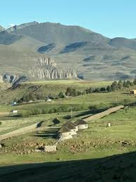
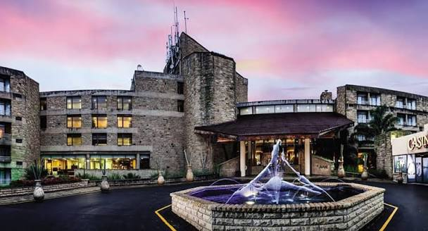

ACCOMODATION
For every visit to Lesotho,you can take a rest at the following places;
Semonkong Lodge
Ratings:4.5/5| Vibes:Rustic-chic adventure hub.
The most famous and established lodge in the
region,situated right on the banks of
the Maletsunyane River at Semonkong. It features
cozy rooms with personal fireplaces,a popular
on-site bar,and free Wi-Fi.
This is the central hub for booking world-
record abseiling,guided pony-trekking tours,
and hikes down into the waterfall gorge.
Maletsunyane Gardens Lodge

Rating:4.2/5| Vibe:Cozy,scenic waterfall-adjacent
retreat.Located significantly closer to the edge of
the waterfall gorge than than the main town of
Semonkong. Rooms are clean and include internal
stoves to combat the high-altitude mountain chill.
The staff offers direct guided hikes to every
bottom of Maletsunyane Falls right from the
property.
Avani Hotel

Rating:4/5|Vibe:Features a large outdoor
swimming pool, manicured gardens, and a
thatched poolside bar.
Equipted with spacious meeting halls and reliable
Wi-Fi, making it a regular choice for regional
events and business travel. It is located at 12
Orpen Road, Providing convinient access to
downtown Maseru and the border post.